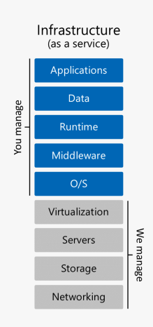
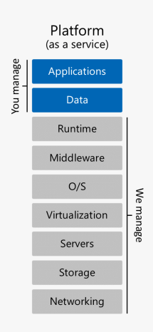

What is Cloud Computing?
Cloud computing is the provision of computer resources to users depending on its purpose through the Internet connection. These resources can be anything related to computing and computers, such as software, hardware, network infrastructure to large servers and server networks. Before the cloud computing era, you must do whatever you want to do by yourself, invest your money almost from start to finish. As an individual user, if you want to save data, you must pay for a hard drive yourself. Want to back up your data regularly and immediately? Besides the hard drive, you also must find the software and connect the hard drive to the network yourself. If you want to build a website, you must buy the server, assemble it, and configure everything. Suppose you want to manage your store's sales; you must buy accounting software or sales software and install it on your computer.
And all that does not stop at the time of purchase. You follow the money you spend after that, also known as the maintenance fee. You buy a hard drive, and if it fails, you must bring it to the warranty. If you run out of warranty, you will lose data and spend more money to buy another drive. If you install the server, you will have to maintain and take care of the cooling system and backup yourself. You install accounting software, every time you have an update; you must re-install it on your computer; if there is an error, you must repair it yourself.
The above problems at first glance seem simple, but it costs you a lot of effort and money, not to mention that it also makes it easier for you to lose important data. Maintenance costs are also very high for businesses because they use small software such as Word, Excel, and PowerPoint and massive and complex management systems, with continuous input and output. So just a small failure could cost millions of dollars in revenue or delay production. They must pay a team of staff to install, configure, test, run, ensure safety, and update their system. If you multiply that amount by the number of hundreds of apps that the business uses, the cost is not small at all. Then came cloud computing, helping you to solve the management of hardware and software partially. If you need to save data, then OneDrive, Dropbox, and Google Drive will help you. You don't care what HDD your file is stored on, whether it is damaged or not, whether you need to backup it to a secondary HDD or not. You also do not need to worry about connecting one computer to another to receive files in two places. Everything is already taken care of by a cloud service provider, and in this case, it is Dropbox, Google, or Microsoft. If the HDD fails, they will replace it themselves, and they will do the periodic backup themselves.
Another example: Phonebook. Previously, you had to back up your contacts to your computer by yourself periodically, you had to keep those contacts files, and if you change your phone, you have to re-install your contacts, which takes time. Now there is Google, Apple, Microsoft, or BlackBerry to take care of contacts for you. Every time you add a new number, the contacts are synced to the cloud and stored there. In case you switch to another phone, contacts can be downloaded quickly. No more frequent backups, no need to manually copy files. And with businesses, they start migrating their applications or software to the cloud.
Cloud computing classification
Infrastructure as a Service (IaaS)
According to Amazon, it is the most basic level of cloud computing; often, IaaS services will sell you things about the network, computers (virtual machines or real machines depending on demand), as well as the data storing location. More specifically, you can rent a "cloud server" with CPU, RAM, hard drive (SSD or HDD) depending on your needs. Amazon Web Services or Digital Ocean are typical IaaS services. You will go up there to select the server, then choose and install the operating system and install other necessary software for your application. If you want to use that server for the website, you install software related to the webserver. If you want to use that server as a database, then install the database. As such, IaaS is not designed for the end-user but primarily for those who want a place to deploy their software.
Platform as a Service (PaaS)
PaaS helps users bypass the hassles of managing their infrastructure (often related to the hardware and operating system). If you rent a PaaS service, you only need to focus on deploying your software onto it and get it up running. Thanks to PaaS, you do not have to worry about updating Windows for your server whenever a patch manages RAM, CPU, or planning resources. An example of PaaS is web hosting services. Everything will be prepared for you, from servers, software, databases to ports. You just need to put your * .html files up there and run. If there is a database, copy the data to it and use it immediately. In this PaaS model, your control over the server is minimal, as a server is usually shared among many PaaS users to save costs.
Software as a Service (SaaS)

This is the highest part of the cloud services classification scheme. It is a finished product operated and managed by one supplier. To put it simply, in most cases, people use SaaS to talk about software and applications that can be immediately used by the end-user. A ubiquitous example of SaaS is a web-based email service, such as Gmail, Outlook, or Yahoo Mail. It is a complete product. You can immediately use it to send and receive mail without setting up a mail management server, not having to establish an Internet connection to that server, or needing to organize user management. Similarly, OneDrive, Dropbox is also SaaS. The software (or website) gives you all the features you need. You do not have to buy a hard drive and set it up from the operating system to the network connection. Google Docs or Microsoft Online is also SaaS, you can jump right in and start typing or creating presentations without installing any other software, no copyright concerns. Evernote, OneNote, Wunderlist, Google Keep are also SaaS cloud service.